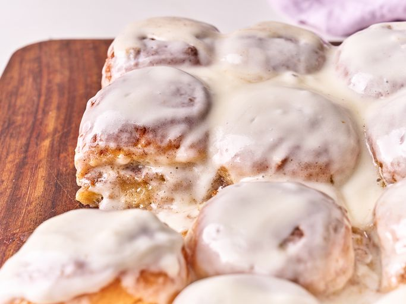

Hawaiian Roll Cinnamon Rolls
Index

Description
These ooey gooey Hawaiian roll cinnamon rolls have a buttery sweet cinnamon layer in the middle, a
and a sweet icing glaze on top after baking. The best part is that you didn't need all day and a night to make them!
Ingredients
- 2/3 cup brown sugar
- 2 teaspoons ground cinnamon
- 9 tablespoons butter
- 1/4 teaspoon salt
- 1(12 count package) Hawaiian rolls
- 3 ounces cream cheese
- 1 teaspoon vanilla extract
- 1 cup confectioners sugar
Steps
- Preheat the oven to 350 degrees F (180 degrees C). Lightly grease a 9x13-inch baking dish.
Slice rolls in half horizontally, keeping tops and bottoms connected.
- Stir together brown sugar, cinnamon, 8 tablespoons butter, and 1/8 teaspoon salt in a small bowl until well combined and set aside.
Spread bottom half of buns with 3/4 of butter mixture and place top halves on top. Place rolls in the prepared baking dish;
spread remaining butter mixture on top.
- Bake in the preheated oven for 20 minutes. Let stand for 5 minutes before icing.
- Meanwhile, beat remaining 1 tablespoon butter with cream cheese, remaining salt, vanilla, and confectioner’s sugar with an electric mixer until smooth. Spread icing over warm rolls.